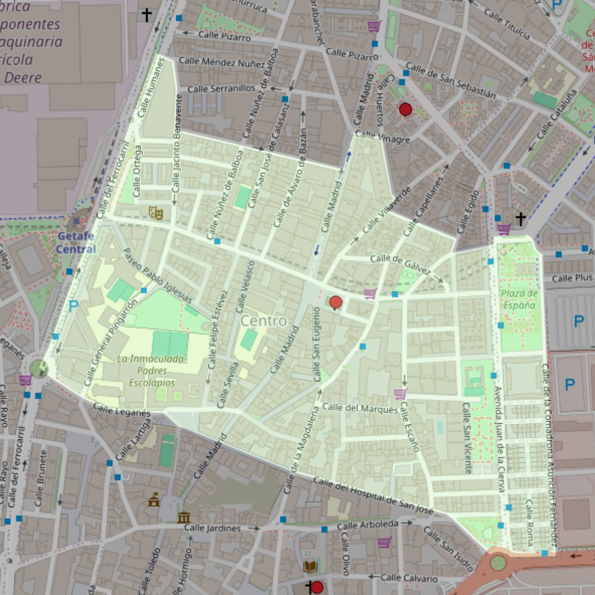

San Eugenio

- Arciprestazgo
- Getafe
- Población
- Getafe
- Dirección postal
- Pza. General Palacios, 12
- Código postal
- 28902
- Extensión
- 0,47 km² (47 ha)
- Teléfono
- 916 847 481
- Correo electrónico
- saneugenio-getafe@diocesisgetafe.es
Límites territoriales según el decreto
“Partiendo de la confluencia de la calle Leganés con el ferrocarril Madrid-Badajoz, arrancan, en dirección noreste, por el eje de las vías de dicho ferrocarril hasta la calle Jacinto Benavente; continúan por el eje de la calle Jacinto Benavente (en dirección sureste), por el eje de la calle General Castaños (en dirección sureste), por el eje de la calle Madrid (en dirección noreste), por el eje de la calle Vinagre (en dirección este), por el eje de la calle Los Huertos (en dirección sureste), por el eje de la calle Villaverde (en dirección sureste), por el eje de la calle Los Angeles (en dirección sureste), por el eje de la calle Perales (en dirección noreste), por el eje de la Avenida Juan de la Cierva (en dirección norte); siguen, en dirección este, por la Plaza de España (que queda incluida), por el eje de la calle Comadrona Asunción Fernández (en dirección sur), por el eje de la calle Arboleda (en dirección noroeste), por el eje de la calle Hospital de San José (en dirección noroeste), por el eje de la calle Leganés (en dirección noroeste) hasta el encuentro con el ferrocarril Madrid-Badajoz, punto de partida.” (Decreto del 17 de febrero de 1998; B-O Mar-98)